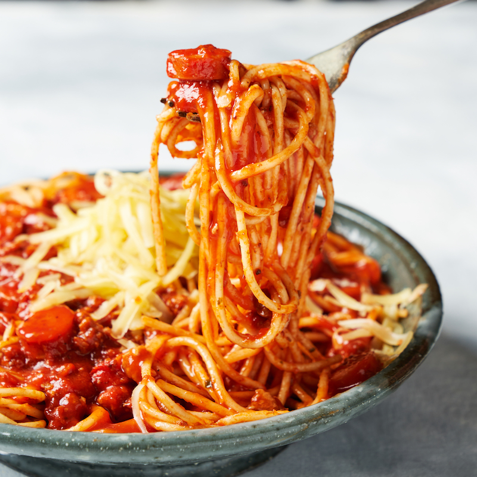

Filipino Spaghetti
Recipe by Vanjo Merano
Ingredients:
- 2 lbs. Spaghetti noodles
- 1 lb. ground pork
- 6 ounces luncheon meat, minced
- 4 pieces hotdogs or beef franks
- 35 ounces Filipino Style Spaghetti Sauce
- 1/2 cup shredded cheddar cheese
- 1 1/2 cups beef broth
- 1 medium onion, minced
- 1 teaspoon minced garlic
- Salt and pepper to taste
- 3 tablespoons cooking oil
Steps:
- Cook the Spaghetti noodles according to package instructions. Once cooked, transfer to a bowl. Set aside.
- Heat the oil in a pan.
- Saute the onion and garlic.
- Once the onions become soft, add the ground pork. Cook until the color turns light brown.
- Add the luncheon meat and hotdog. Stir and cook for 2 to 3 minutes.
- Pour in the Spaghetti sauce and beef broth. Stir and let boil. Cover and simmer for 30 minutes.
- Try to taste the sauce and add salt and pepper if needed.
- Pour the Filipino Style Spaghetti sauce over the Spaghetti. Top with shredded cheese.
- Serve. Share and enjoy!
Filipino Spaghetti is my favorite dish because it reminds me of my childhood in the Philippines.
Click here to access free recipes.